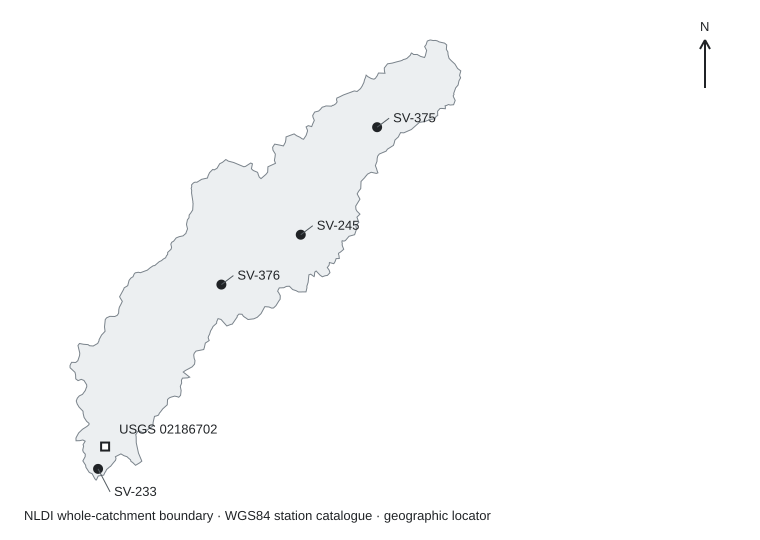

Eighteenmile stream nutrients and flow
Six years of original South Carolina nutrient observations, paired by sampling activity and connected to USGS daily streamflow. Concentration bounds retain the original quantitation limits, laboratory methods, sample depths and flow qualifiers.
Observed patterns
On the 23 dates shared by SV-375 and SV-376, phosphorus at SV-376 was higher on 22 dates; one comparison overlaps at the source quantitation limits. The average paired difference is bounded by (0.016, 0.031) mg/L. Samples were collected 25–49 minutes apart on those dates. Reconstructed total nitrogen at SV-376 was lower on 20 of the same 23 dates. Nineteen dates combine lower reconstructed nitrogen with higher phosphorus at SV-376. Nitrate/nitrite is lower at SV-376 on all 23 dates, while the mean Kjeldahl nitrogen difference remains positive across the retained censor bounds.
SV-233 contains the highest original phosphorus result: 1.8 mg/L on 15 August 2022, when the reference gauge daily mean was 25.1 ft³/s (annual flow percentile 10.82). The shared 12 June 2023 samples at SV-233 and SV-376 measured 0.75 and 0.76 mg/L during a 604 ft³/s day (percentile 99.32). These contrasting conditions are visible in the activity table and support separate event review rather than assigning one flow mechanism to every high concentration.
Sampling coverage differs by station: SV-233 spans 2020–2025, SV-375 starts in 2022, SV-376 starts in 2023, and SV-245 has one observation in December 2023. Compare the same-date pairs and annual cohorts alongside the full-period summaries.
Concentrations by station
Intervals reflect source censoring. A bracket includes the endpoint and a parenthesis excludes it. Equal endpoints are reported numerical concentrations. These are sample summaries, with each activity weighted equally.
| Station / cohort | Analyte | n | Censored | Mean interval (mg/L) | Median interval (mg/L) | First sample | Last sample |
|---|---|---|---|---|---|---|---|
| SV-233 | Reconstructed total N | 68 | 10 | [0.949, 0.964) | [0.86, 0.87] | 2020-01-06 | 2025-11-04 |
| SV-233 | Phosphorus | 68 | 0 | 0.097 | 0.048 | 2020-01-06 | 2025-11-04 |
| SV-375 | Reconstructed total N | 48 | 19 | [0.943, 0.982) | [0.915, 0.99) | 2022-01-11 | 2025-12-04 |
| SV-375 | Phosphorus | 48 | 31 | [0.016, 0.029) | [0, 0.02) | 2022-01-11 | 2025-12-04 |
| SV-376 | Reconstructed total N | 36 | 12 | [0.68, 0.713) | [0.63, 0.675) | 2023-01-23 | 2025-12-04 |
| SV-376 | Phosphorus | 36 | 4 | [0.062, 0.064) | 0.031 | 2023-01-23 | 2025-12-04 |
| SV-245 | Reconstructed total N | 1 | 0 | 0.84 | 0.84 | 2023-12-14 | 2023-12-14 |
| SV-245 | Phosphorus | 1 | 0 | 0.029 | 0.029 | 2023-12-14 | 2023-12-14 |
Same-date station contrasts
Differences are station B minus station A. Original station identifiers define each comparison; sampling clock offsets remain explicit. Bounds are propagated before determining direction.
| A | B | Analyte | Dates | B higher | B lower | Equal | Unresolved | Mean B − A (mg/L) | Clock gap (minutes) |
|---|---|---|---|---|---|---|---|---|---|
| SV-233 | SV-376 | Reconstructed total N | 24 | 2 | 19 | 0 | 3 | (-0.296, -0.246) | 29–204 |
| SV-233 | SV-376 | Phosphorus | 24 | 4 | 20 | 0 | 0 | [-0.035, -0.032) | 29–204 |
| SV-233 | SV-375 | Reconstructed total N | 11 | 8 | 3 | 0 | 0 | (0.058, 0.104) | 54–77 |
| SV-233 | SV-375 | Phosphorus | 11 | 0 | 11 | 0 | 0 | [-0.047, -0.036) | 54–77 |
| SV-375 | SV-376 | Reconstructed total N | 23 | 3 | 20 | 0 | 0 | (-0.261, -0.183) | 25–49 |
| SV-375 | SV-376 | Phosphorus | 23 | 22 | 0 | 0 | 1 | (0.016, 0.031) | 25–49 |
Paired nitrogen components
The components use the exact same activities as the total-N comparison. Their difference bounds sum back to the total-N bounds for every pair.
| A | B | Dates | NOx: B lower | NOx: B higher | Mean NOx B − A (mg/L) | Mean TKN B − A (mg/L) |
|---|---|---|---|---|---|---|
| SV-233 | SV-376 | 24 | 19 | 5 | -0.098 | (-0.198, -0.147) |
| SV-233 | SV-375 | 11 | 1 | 10 | 0.181 | (-0.123, -0.077) |
| SV-375 | SV-376 | 23 | 23 | 0 | -0.275 | (0.014, 0.092) |
Agency calculated nitrogen: source reconciliation
All six original rows labelled Calculated Nitrogen lie below the compatible sum of TKN and nitrate/nitrite from the same sampling activity. Each reported value equals the TKN value or its quantitation limit. The original rows remain unchanged; the reconstructed total is a separate derived field. This source inconsistency is visible to every consumer of this edition.
| Date | Station | Agency calculated N | Original TKN bounds | Original NOx | Reconstructed N bounds | Agency source data row |
|---|---|---|---|---|---|---|
| 2024-02-15 | SV-233 | 0.1 | [0, 0.1) | 0.61 | [0.61, 0.71) | 281 |
| 2024-02-15 | SV-375 | 0.1 | [0, 0.1) | 0.95 | [0.95, 1.05) | 234 |
| 2024-02-15 | SV-376 | 0.1 | [0, 0.1) | 0.56 | [0.56, 0.66) | 268 |
| 2024-03-19 | SV-233 | 0.1 | [0, 0.1) | 0.62 | [0.62, 0.72) | 218 |
| 2024-03-19 | SV-375 | 0.14 | 0.14 | 0.98 | 1.12 | 244 |
| 2024-03-19 | SV-376 | 0.2 | 0.2 | 0.53 | 0.73 | 284 |
Streamflow and sampling coverage
Each of the 153 activities matches the same original calendar date at gauge 02186702, Eighteenmile Creek below Pendleton. The reference series is parameter 00060, statistic 00003, daily mean discharge in ft³/s. Annual flow percentile uses the midrank among all daily values in that calendar year. 10 of 106 sampled dates fall in the upper decile of their year.
| Year | Daily values | Mean flow | Median flow | Annual max | Sample dates | Sample max | Upper-decile sample dates | Estimated days | Provisional days |
|---|---|---|---|---|---|---|---|---|---|
| 2020 | 366 | 112.653 | 78.85 | 1370 | 12 | 312 | 1 | 0 | 0 |
| 2021 | 365 | 67.228 | 52.1 | 566 | 12 | 128 | 1 | 2 | 0 |
| 2022 | 365 | 67.398 | 51 | 953 | 22 | 200 | 2 | 0 | 0 |
| 2023 | 365 | 68.421 | 53.9 | 1140 | 25 | 604 | 2 | 0 | 0 |
| 2024 | 366 | 73.53 | 42.15 | 2170 | 13 | 154 | 1 | 0 | 0 |
| 2025 | 365 | 49.69 | 39.9 | 756 | 22 | 233 | 3 | 2 | 29 |
The complete daily series carries four estimated days and 29 provisional days. The two activities on 4 December 2025 match provisional flow; the other 151 match approved flow. Seven-day antecedent statistics use the preceding seven calendar days, excluding the sample day; incomplete windows retain their available-day count and blank statistics.
Station and catchment context

All four station points fall inside the retained NLDI whole-catchment polygon. That source was requested with splitCatchment=false; catchment membership alone does not place every station upstream of the gauge. SV-233 is south of the gauge. Daily discharge provides shared basin context for these comparisons.
| Station | Original description | Latitude | Longitude | Original datum | Activities |
|---|---|---|---|---|---|
| SV-233 | EIGHTEENMILE CK AT 2-04-279 | 34.63478373 | -82.80447251 | WGS84 | 68 |
| SV-245 | EIGHTEENMILE CK AT S-39-27 3.3 MI S OF LIBERTY | 34.74190271 | -82.69169936 | WGS84 | 1 |
| SV-375 | EIGHTEEN MILE CK AT ANN DRIVE | 34.791084 | -82.649218 | WGS84 | 48 |
| SV-376 | EIGHTEENMILE CK AT SIMMS SCHOOL RD/ S-39-44 | 34.71909 | -82.73586 | WGS84 | 36 |
Annual, seasonal and flow cohorts
| Station / cohort | Analyte | n | Censored | Mean interval (mg/L) | Median interval (mg/L) | First sample | Last sample |
|---|---|---|---|---|---|---|---|
| SV-233|2020 | Reconstructed total N | 12 | 0 | 1.053 | 1.14 | 2020-01-06 | 2020-12-03 |
| SV-233|2020 | Phosphorus | 12 | 0 | 0.038 | 0.036 | 2020-01-06 | 2020-12-03 |
| SV-233|2021 | Reconstructed total N | 12 | 3 | [0.995, 1.02) | [1.01, 1.025] | 2021-01-06 | 2021-12-02 |
| SV-233|2021 | Phosphorus | 12 | 0 | 0.04 | 0.029 | 2021-01-06 | 2021-12-02 |
| SV-375|2022 | Reconstructed total N | 12 | 2 | [0.93, 0.947) | [0.94, 0.985) | 2022-01-11 | 2022-12-01 |
| SV-375|2022 | Phosphorus | 12 | 8 | [0.029, 0.042) | [0, 0.02) | 2022-01-11 | 2022-12-01 |
| SV-233|2022 | Reconstructed total N | 10 | 3 | [0.724, 0.754) | [0.73, 0.74] | 2022-01-19 | 2022-12-06 |
| SV-233|2022 | Phosphorus | 10 | 0 | 0.223 | 0.044 | 2022-01-19 | 2022-12-06 |
| SV-375|2023 | Reconstructed total N | 12 | 6 | [0.999, 1.049) | [1.015, 1.055] | 2023-01-03 | 2023-12-07 |
| SV-375|2023 | Phosphorus | 12 | 6 | [0.014, 0.024) | [0.011, 0.021) | 2023-01-03 | 2023-12-07 |
| SV-233|2023 | Reconstructed total N | 12 | 2 | [1.002, 1.019) | 0.87 | 2023-01-23 | 2023-12-05 |
| SV-233|2023 | Phosphorus | 12 | 0 | 0.156 | 0.069 | 2023-01-23 | 2023-12-05 |
| SV-376|2023 | Reconstructed total N | 12 | 4 | [0.63, 0.663) | [0.61, 0.635) | 2023-01-23 | 2023-12-05 |
| SV-376|2023 | Phosphorus | 12 | 3 | [0.106, 0.111) | 0.029 | 2023-01-23 | 2023-12-05 |
| SV-245|2023 | Reconstructed total N | 1 | 0 | 0.84 | 0.84 | 2023-12-14 | 2023-12-14 |
| SV-245|2023 | Phosphorus | 1 | 0 | 0.029 | 0.029 | 2023-12-14 | 2023-12-14 |
| SV-233|2024 | Reconstructed total N | 12 | 2 | [0.905, 0.922) | 0.785 | 2024-01-03 | 2024-12-12 |
| SV-233|2024 | Phosphorus | 12 | 0 | 0.059 | 0.053 | 2024-01-03 | 2024-12-12 |
| SV-375|2024 | Reconstructed total N | 12 | 4 | [0.986, 1.019) | [1.005, 1.055) | 2024-01-03 | 2024-12-12 |
| SV-375|2024 | Phosphorus | 12 | 7 | [0.013, 0.024) | [0, 0.02) | 2024-01-03 | 2024-12-12 |
| SV-376|2024 | Reconstructed total N | 12 | 4 | [0.719, 0.752) | [0.635, 0.675) | 2024-01-03 | 2024-12-12 |
| SV-376|2024 | Phosphorus | 12 | 0 | 0.039 | 0.034 | 2024-01-03 | 2024-12-12 |
| SV-375|2025 | Reconstructed total N | 12 | 7 | [0.856, 0.914) | [0.84, 0.92) | 2025-01-14 | 2025-12-04 |
| SV-375|2025 | Phosphorus | 12 | 10 | [0.007, 0.024) | [0, 0.02) | 2025-01-14 | 2025-12-04 |
| SV-376|2025 | Reconstructed total N | 12 | 4 | [0.691, 0.724) | [0.66, 0.685] | 2025-01-14 | 2025-12-04 |
| SV-376|2025 | Phosphorus | 12 | 1 | [0.039, 0.041) | 0.029 | 2025-01-14 | 2025-12-04 |
| SV-233|2025 | Reconstructed total N | 10 | 0 | 0.981 | 0.95 | 2025-02-24 | 2025-11-04 |
| SV-233|2025 | Phosphorus | 10 | 0 | 0.083 | 0.074 | 2025-02-24 | 2025-11-04 |
Methods and interpretation
Reconstructed total nitrogen is the same-activity sum of unfiltered Kjeldahl nitrogen (method 10-107-06-2-E) and nitrate/nitrite (10-107-04-1-C). Ammonia is already a component of Kjeldahl nitrogen. Original results state mg/L and leave the weight-basis field blank; the “as N” interpretation is supported by the recorded methods and the primary method references below. The derivation retains both original components and their row selectors.
For a below-quantitation result, the analysis carries a conservative nonnegative lower bound of zero and an exclusive upper bound equal to that row’s original limit. Numeric results retain their reported concentration. No substituted half-limit concentration enters a mean or station contrast. Mean and median bounds are computed from the corresponding endpoint arrays; concentration results are rounded to twelve decimal places after arithmetic to remove binary floating-point residue.
Forty-one reconstructed nitrogen values and 35 phosphorus results retain upper limits. Quantitation intervals describe censoring and do not include laboratory measurement error. The station comparisons describe observed concentration differences; daily gauge values and samples separated in place and time support hydrological context. A mass-load model needs the appropriate site-specific discharge and concentration relationship. Annual, seasonal and flow cohorts remain descriptive samples with unequal coverage.
Station markers use the original WGS84 catalogue. The gauge daily-series coordinates use EPSG:4326; the separate retained gauge metadata records NAD83. The locator map uses a local longitude/latitude display and retains the full original catchment boundary in its source file.
Primary method references
- USGS method catalogue, CAL12: total N from TKN and nitrate/nitrite
- EPA National Lakes Assessment 2022 laboratory manual, Table 10.4: nitrate/nitrite method basis
- USGS assessment of total-nitrogen methods and their precision and bias
- USGS LOADEST guidance on discharge timing and stream response